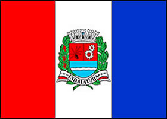

BANDEIRA DE INDAIATUBA

HISTÓRIA DA CIDADE
O núcleo urbano de Indaiatuba se fixou em torno do Largo da Igreja, como era costume. A história política de
Indaiatuba inicia-se com a ereção de sua capela curada, através da doação de alguns imóveis feita à capela,
por Pedro Gonçalves Meira, em 1813. Por esse gesto Pedro é considerado o fundador de nossa cidade.
SOBRE A CIDADE
LOCAIS IMPERDÍVEIS PARA VOCÊ VISITAR EM INDAIATUBA
- Parque Ecológico
- Casarão Pau Preto
- Museu Ferroviário
- Museu da Água
- Parque da Criança
- Parque do Mirim